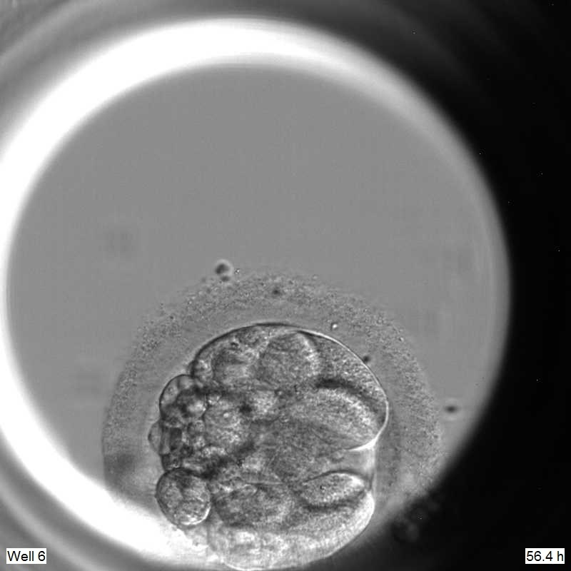
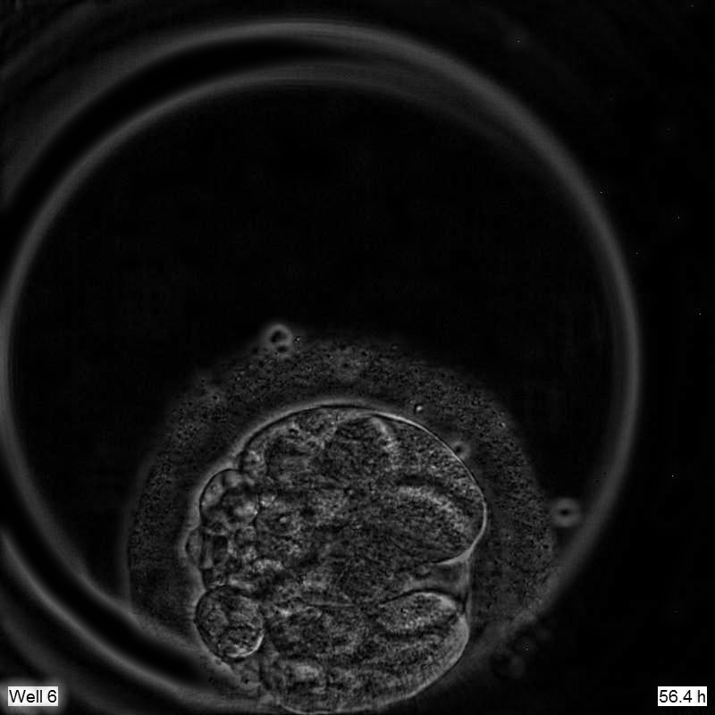
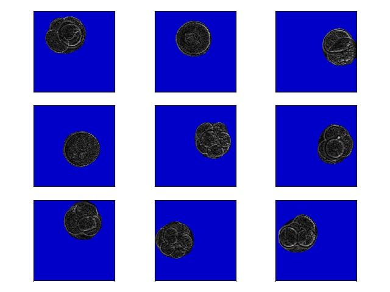

教你如何使用网站API将IP地址转化成具体国家、城市或经纬度！
数据准备
我们所采用的数据是人的胚胎卵细胞的数据，下图中展示的就是我们所用到的胚胎图像的样例。从图中可以看到的是，一个是图像的噪声比较大，另一个是受到曝光不均匀的影响，左侧光圈内部的图像可能无法正常被识别。

所以我们首先要解决光照不均匀的问题。这个问题的解决方法网上有很多，我们这里采用了一种比较简单的方式。首先我们将图像用最小值滤波产生一个背景板，随后对背景板进行均值滤波，然后让原始图像减去背景板，得到了下图。

可以看到的是我们的光照不均匀的问题已经基本解决了，还顺带解决了一部分的噪声问题。
随后我们对图片进行了打标。我们标注了370张左右的图片，为了避免过拟合，选取了其中的70张作为验证集，剩余的图片用于训练。
模型搭建
我们采用keras搭建了我们的模型，代码如下：
1 | def unet(pretrained_weights=None, input_size=(224, 224, 1)): |
数据增强
数据增强部分，我们采用了keras自带的image preprocessing。要保证的是，img_sub_folder和mask_sub_folder在root的文件下，图片都采用从0开始的数字序列命名，而且要保证相同名字的图片和mask对应。
在adjustData中，只做了将图片除以255的操作。
1 | import numpy as np |
模型训练
为了避免过拟合，我们用验证集进行了早停。patience设置为5。
1 | model = unet() |
训练结果
验证集正确率达到了98.65%，训练集正确率达到了98.53%。
